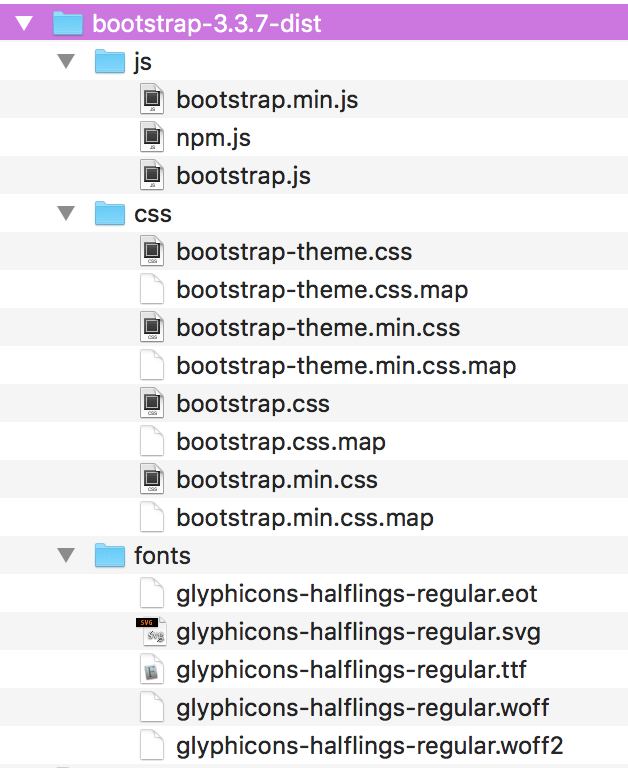
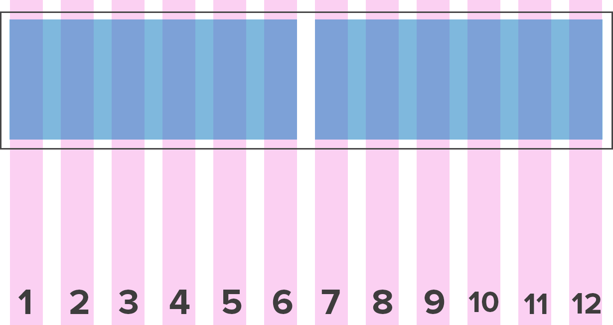

Building With Bootstrap
Welcome!
Girl Develop It is here to provide affordable and accessible programs to learn software through mentorship and hands-on instruction.
Some rules:
- We are here for you!
- Every question is important
- Help each other
- Have fun!
Remember!
“You have a right to be here.”
Sponsor
Big thank you to Veritas for providing lunch and our classroom space!
Introductions
Meet your instructor
Meet your TAs
Meet each other
- Who are you?
- What do you do?
- How did you hear about GDI?
- Have you worked with Bootstrap before?
What we’ll be covering today
- Downloading Bootstrap and adding it to an HTML document
- Working with Bootstrap’s responsive grid system
- Styling images and buttons with Bootstrap classes
- Working with Bootstrap’s reusable user interface components
- If we have time: incorporating one of Bootstrap’s JavaScript plugins into your resume
What we will NOT be covering today
- Custom Bootstrap theme development
- Styling CSS on top of what comes default with Bootstrap
- Using every Bootstrap component and JavaScript plugin
So what is Bootstrap?
Bootstrap is a front end framework that helps speed up the development of responsive websites.
What is Bootstrap?
Bootstrap is one of the most popular front end frameworks with 111k+ stars and over 51,000 forks.
It’s an open source project on GitHub, meaning it is free to use and anyone can contribute to its progress.
What is a front end framework?
A front end web framework is a collection of flexible, production-ready HTML, CSS, and JavaScript that we can use when we develop websites and applications.
Keep in mind that Bootstrap is not just a CSS grid. It also comes with components to build a fully-functional, visually-consistent website.
Why would I want to use Bootstrap?
Bootstrap is designed to be responsive, which means that your HTML elements will respond to changes in screen size.
So this desktop design

Also looks good on a tablet

And rad on a smartphone!
Why would I want to use Bootstrap?
Bootstrap is also mobile-first, which means that it prioritizes ease of viewing at a mobile level and builds progressively for larger screen sizes.
Best of all, Bootstrap allows designers & developers of all levels to build sites quickly.
What comes with Bootstrap?
Open your browser and navigate to
getbootstrap.com/getting-started/#download.
Click the Download Bootstrap button.
Unzip the folder you just downloaded.
What comes with Bootstrap?
Base CSS
- Global CSS settings
- Styling for fundamental HTML elements such as tables, forms, buttons, and images
- The grid system
Components
Styles for common reusable components
JavaScript
jQuery-powered JavaScript plugins for interactive elements such as tooltips, modal windows, and carousels
Let’s talk about the Bootstrap grid system
Bootstrap’s grid system is its most powerful and widely used feature.
The grid system is based on a 12-column grid and uses CSS classes to decide the width of each HTML element they’re applied to.

Each element can take up between 1 and 12 columns-worth of space.

Some grid system rules
- Rows must be placed within a .container (fixed-width) or .container-fluid (full-width) for proper alignment and padding
- Use .row elements to create horizontal groups of columns
- Content should be placed within columns, and only columns may be immediate children of rows
<div class="container">
<div class="row">
[CONTENT FOR ROW]
</div>
</div>
or
<div class="container-fluid">
<div class="row">
[CONTENT FOR ROW]
</div>
</div>
See it in action
If you haven’t already, download the project files by going to
github.com/gdiminneapolis/building-with-bootstrap-project-files/archive/master.zip.
Unzip the building-with-bootstrap-project-files-master.zip file and move the folder somewhere handy (in a sites folder, on your desktop, etc.).
Open Sublime Text, then open your building-with-bootstrap-project-files-master folder.
See it in action
Open up slide-demo/container.html in your browser.
Resize your browser to see where the columns break to fit 100% of the width.
See it in action
Open up slide-demo/container-fluid.html in your browser.
Resize your browser to see where the columns break to fit 100% of the width.
Column classes
If you want to have two 50% columns on a mobile phone, you would use .col-xs-6 nested in a .row, and the rows would be consistent on every device.
2 50%-width columns
<div class="container">
<div class="row">
<div class="col-xs-6">
[COLUMN 1 CONTENT]
</div>
<div class="col-xs-6">
[COLUMN 2 CONTENT]
</div>
</div>
</div>
If you want to have four 25% columns on a desktop screen size, and would like them to break to 100% on a tablet, you would use .col-md-3 nested in a .row.

4 25%-width columns
<div class="container">
<div class="row">
<div class="col-md-3">
[COLUMN 1 CONTENT]
</div>
<div class="col-md-3">
[COLUMN 2 CONTENT]
</div>
<div class="col-md-3">
[COLUMN 3 CONTENT]
</div>
<div class="col-md-3">
[COLUMN 4 CONTENT]
</div>
</div>
</div>
Develop it
Open slide-demo/demo.html in Sublime Text.
Find bootstrap.css inside the bootstrap-3.3.7-dist/ folder we downloaded, and add it to the slide-demo/css/ folder.
Add it to the head of demo.html.
<head>
<meta charset="UTF-8">
<title>Building with Bootstrap Demo - GDI Minneapolis</title>
<link rel="stylesheet" href="css/bootstrap.css">
</head>
Create a 2-column layout that will break down to 100% on small devices.
<body>
<div class="container">
<div class="row">
<div class="col-sm-6">
Content
</div>
<div class="col-sm-6">
Content
</div>
</div>
</div>
</body>
Open demo.html in your browser and resize to see how the columns respond.
Ok, but how is it doing that?!
Media queries
Media query is a CSS technique introduced in CSS3.
It lets you add breakpoints where certain parts of the design will behave differently on each side of the breakpoint.
Bootstrap uses the breakpoints 768px, 992px, and 1200px
Take a peek at Bootstrap’s media queries
Open bootstrap.css
Scroll to line 1616
This is where the grid system is defined in the CSS.
A couple basic Bootstrap components
Images
Images can be made responsive with .img-responsive, which adds max-width: 100% and height: auto to scale the image to its parent container.
Other styling classes: .img-rounded, .img-circle (only works on square images), and .img-thumbnail
Develop it
Add some responsive images to your columns in slide-demo/demo.html
Add a styling class to at least one of the images.
<img src="images/puppies.jpg" alt="Puppies!" class="img-responsive">
<img src="images/donut.jpg" alt="Yummy donut" class="img-responsive img-circle">
Buttons
http://getbootstrap.com/css/#buttons
The button class .btn can be used on <button/>, <input/>, or <a/> elements.
Additional classes can be used to provide extra visual weight and indentify primary button actions:
.btn-default, .btn-primary, .btn-success, etc.
Develop it
Add some buttons or links with the button class to your columns in slide-demo/demo.html
Add a styling class to at least one of the buttons.
<button class="btn btn-default">This is a button</button>
<a href="btn btn-primary">This is a link but it looks like a button</a>
Time to put this all to use!
We’ll be making a simple resume site using Bootstrap’s grid system and components.
We’ll be working in the resume/ folder inside your project directory.
The source code (finished version) of the resume is in the resume-source-code/ folder in case you get stuck.
Open resume/index.html in Sublime Text.
Find bootstrap.css inside the bootstrap-3.3.7-dist/ folder we downloaded, and add it to the resume/css/ folder.
Find the fonts/ directory inside the bootstrap-3.3.7-dist/ folder we downloaded, and add it to the resume/ folder.
In order for our navbar to work on mobile, we’ll need Bootstrap’s JavaScript as well.
Find bootstrap.js inside the bootstrap-3.3.7-dist/ folder we downloaded, and add it to the resume/js/ folder.
Add bootstrap.css to the head of index.html.
<head>
<meta charset="UTF-8">
<title>Resume Site - Building with Bootstrap - GDI Minneapolis</title>
<link rel="stylesheet" href="css/bootstrap.css">
</head>
Add jquery.min.js and bootstrap.js to index.html right above the closing </body> tag.
<script src="js/jquery.min.js"></script>
<script src="js/bootstrap.js"></script>
</body>
Navbar
Add a <nav> with the classes navbar and navbar-default inside a <header> element.
Add a .container-fluid to the nav.
<header>
<nav class="navbar navbar-default">
<div class="container-fluid">
</div>
</nav>
</header>
Navbar
The navbar can get complicated from here, so we’re going to copy and paste the pieces we want from the documentation.
Navbar
Inside the nav, add a button that will toggle the navigation menu on mobile.
<button type="button" class="navbar-toggle collapsed"
data-toggle="collapse" data-target="#navbar" aria-expanded="false">
<span class="sr-only">Toggle navigation</span>
<span class="icon-bar"></span>
<span class="icon-bar"></span>
<span class="icon-bar"></span>
</button>
Navbar
Now we want to grab the div that has the classes collapse navbar-collapse, including the <ul>, and paste it as a sibling of the toggle button.
<div class="collapse navbar-collapse" id="navbar">
<ul class="nav navbar-nav">
</div>
</div>
Navbar
Finally, add a list item with a link inside of it for each of these sections we’ll be creating:
About, Skills, Experience, Education, Portfolio
The href attribute of each link should be set to # for now.
<li><a href="#">About</a></li>
<li><a href="#">Skills</a></li>
<li><a href="#">Experience</a></li>
<li><a href="#">Education</a></li>
<li><a href="#">Portfolio</a></li>
Jumbotron
Add a jumbotron element after the <nav>
Inside the jumbotron, add an h1 with your name, and a paragraph element with your job title.
Make your job title stand out with a .lead class.
Jumbotron
<div class="jumbotron">
<h1>Your Name</h1>
<p class="lead">Your Job Title</p>
</div>
Jumbotron
Open resume/index.html in your browser.
Things would probably look better if the content in the <header> was all centered.
Browse the docs to find a class that will center the text of an element.
<header class="text-center">
...
</header>
Refresh your browser to see if it worked.
Setting up our sections
Create a section with a nested .container
Create 2 columns, one that spans 1/4 of the container and and one that spans 3/4 of the container. Both of them should break down to 100% on small devices.
Setting up our sections
Let’s add some comments to describe what content we want to put inside each column.
<!-- title column -->
<div class="col-md-3"></div>
<!-- content column -->
<div class="col-md-9"></div>
Setting up our sections
Copy and paste the section we just created until you have 5 of them.
Inside the title columns of each add a h2 with the section title from the corresponding nav link.
Setting up our sections
<section>
<!-- title column -->
<div class="col-md-3">
<h2>About</h2>
</div>
...
</section>
<section>
<!-- title column -->
<div class="col-md-3">
<h2>Skills</h2>
</div>
...
</section>
...
About
Add a new .row inside the content column.
Create 2 columns, one that spans 2/3 of the container and and one that spans 1/3 of the container. Both of them should break down to 100% on small devices.
Add an image to the larger column and make it a circle (it should be responsive as well).
Add a couple paragraphs about you after the image.
About
In the smaller column, create an unordered list element that is styled to have no bullets.
Add your email and phone number as list items. Start each list item with the corresponding glyphicon.
Extra credit: Add your address with a matching glyphicon as well.
About
<div class="col-md-9">
<div class="row">
<div class="col-sm-8">
<img src="image.jpg" alt="about image" class="img-circle">
<p>Mlkshk tacos lomo, selfies blog crucifix shabby.</p>
</div>
<div class="col-sm-4">
<ul class="list-unstyled">
<li><span class="glyphicon glyphicon-phone"></span> 555-555-5555</li>
<li><span class="glyphicon glyphicon-envelope"></span>your_email@gmail.com</li>
</ul>
</div>
</div>
</div>
Skills
Inside the content column, list your skills inside h5 elements.
Under each skill add a progress bar.
Update the width properties to accurately reflect how confident you are in each skill.
Skills
<h5>HTML</h5>
<div class="progress">
<div class="progress-bar" style="width: 95%">
<span class="sr-only">95% complete</span>
</div>
</div>
Experience
Add a new .row inside the content column.
Create 2 columns, one that spans 1/4 of the container and and one that spans 3/4 of the container. Both of them should break down to 100% on small devices.
Experience
In the larger column add a company name inside an h3, followed by your job title inside an h4, followed by a paragraph with a brief description of the job.
Inside the smaller column add an h5 with the date range of your employment with the company.
Experience
<div class="row">
<div class="col-sm-3">
<h5>6/2016–present</h5>
</div>
<div class="col-sm-9">
<h3>Clockwork</h3>
<h4>Front End Developer</h4>
<p>Direct trade craft beer hammock, messenger bag retro knausgaard.</p>
</div>
</div>
Add more job experiences by copy+pasting the entire .row and updating the information.
Education
Education entries are formatted the same as job experience entries, so follow those directions again.
Portfolio
Inside the content column, create three columns that each take up 1/3 of the container width. They should break down to 100% on small screens.
Inside each column add a .thumbnail div with a .text-center class.
inside each thumbnail add a project image, h4 with the project title, and h5 with a project category.
Portfolio
<div class="row">
<div class="col-sm-4">
<div class="thumbnail text-center">
<img src="image.jpg" alt="HTML & CSS" class="img-responsive">
<h4>Project</h4>
<h5>HTML & CSS</h5>
</div>
</div>
...
</div>
Add more projects by copy+pasting the entire .row and updating the information.
Footer
Add a footer with a nested .container
Add a copyright symbol (©) inside a <small> element.
Center the copyright.
Footer
<footer>
<div class="container text-center">
<small>© 2017 Your Name</small>
</div>
</footer>
Finishing up
Add an id to each section that matches its heading. Make sure you make it all lowercase, though!
Go back to your nav links and add the corresponding section id inside the href attribute, after the # we left there earlier.
Refresh your browser. Click on each nav link; you should be jumped down to the corresponding section.
Finishing up
<ul class="list-inline">
<li><a href="#about">About</a></li>
<li><a href="#skills">Skills</a></li>
...
</ul>
...
<section id="about">...</section>
<section id="skills">...</section>
Finishing up
Our resume site is a little plain right now. We didn’t have time to cover writing custom CSS that works with Bootstrap so I created a stylesheet ahead of time to add some styling to our site.
Find it in resume-source-code/css/styles.css. Copy and paste the file into the resume/css/ folder, then add it to the head of your resume site.
Refresh your browser to see how just a few extra lines of CSS can totally transform your site.
BONUS: Adding some JavaScript
The JavaScript plugin we’re going to use is called Scrollspy, but all of Bootstrap’s JavaScript comes packaged in one file together.
Scrollspy works by targetting the links inside an element we select.
The easiest and fastest way to do that is to use an element’s ID.
Scrollspy
Earlier we gave the <div> wrapping the nav <ul> an id of navbar.
That’s the ID we’re going to use to trigger Scrollspy.
Scrollspy
Right above the closing </body> tag, add a new <script> element.
Attach the scrollspy function to the body, and target the navbar ID.
<script>
$('body').scrollspy({ target: '#navbar' });
</script>
Scrollspy
Open index.html in your browser and scroll or click on the navigation links to see how Scrollspy affects the navigation.